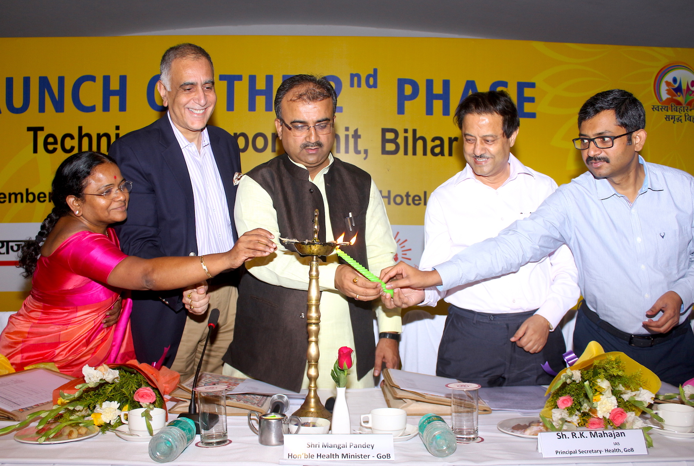

HEALTH MELA & AWARENESS CAMP- PROJECT SAATHI

A health mela and awareness camp was held at a Government dispensary in Jassi Pauwali village on 10th Sept’17. The objective of this event was to spread awareness on the issue of contagious diseases and facilitate health checkups for the villagers.
Registration of patients and check up started by 10:00 am. The camp was inaugurated by the village sarpanch. The project staff had invited doctors, frontline health workers, and PRI members for the camp. A total of 114 patients underwent checkup. (62 women, 52 men, and 18 children).
After the inauguration, the Project Manager CARE India gave a detailed introduction about the project to familiarise the community with objectivities and activities of the project. He emphasised that the project is working on the establishment of model anganwadis, kitchen garden in the AWC and in households, the formation of self-help groups, remedial education, and employability.
Thereafter, block extension educator from CHC-Goniana spoke at length on the preventive measures to be taken by the villagers for communicable diseases. He said that precaution needs to be taken at mass level to get rid of these diseases. He stressed on the causes and symptoms of dengue and malaria. He also gave a brief account on the facilities provided by the government (Immunisation, free medical aid, medical tests, x-ray etc.) to the deprived strata of society. The efforts of Goniana hospital and doctors to give better health care services to the patients is appreciable.
Dr. Jyot Ram Jain (child specialist) talked about infant and young child feeding practices as that is the most important stage of a child’s health. He explained at length on early initiation of breast feeding, exclusive breastfeeding, complementary feeding practices and its significance overall.
Dr. Mansi Bansal (General physician) highlighted the symptoms of Malaria, Diarrhea, and TB. She also explained the preventive measures which one can take to get rid of these diseases.
There was a Nukad Natak performance by Sukhmandir Memorial Charitable Trust team on communicable disease and cancer. The play was very entertaining and delivered key messages on the causes, prevention and cure of the communicable disease like dengue and malaria. Towards the end they also gave a short message on avoiding substance use as regular use of nicotine present in these substances can cause cancer among many.
At the close, project manager, CARE India thanked all the participants, doctors, PRI members and Sarpanch, for taking time out for the event. He requested people who attended the camp to spread the knowledge gained to other people in the village so that more and more people come to know about these diseases and preventive measures.
A referral card was also given to patients who attended the camp. ANM, MPW, LHV’s all cooperated in this health checkup by taking the BP and weight of the patients and assisting the doctors. Dr. Anita supported in counselling the patients on important things to be kept in mind for prevention from Dengue, Malaria and TB. The posters and pamphlets containing key messages of dengue and malaria was distributed to the patients and the community at large.